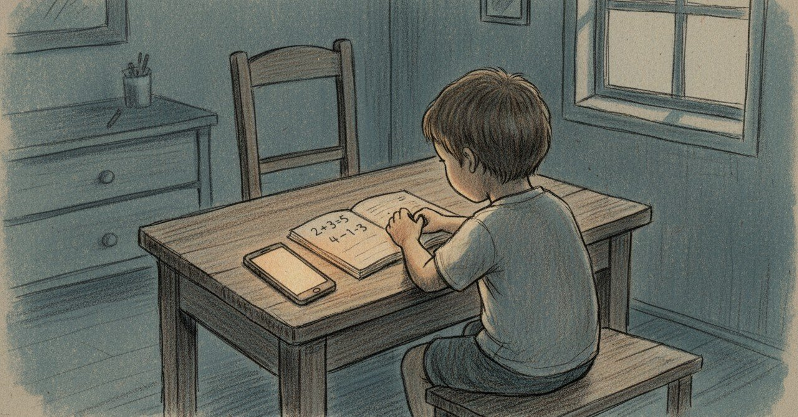

未完成のひだまりを、誰かの家庭に渡したい

2週間前の夜、9つの直しを残したまま、申込みフォームを置いた。
ひだまりという、LINEで動くAI家庭教師を作っている。小4から中3の子が、わからない問題を、誰にも気づかれずに戻れる場所。
中2の問題でつまずいたら、必要なら小1まで遡る。本人には「戻ってる」と気づかれないように。
「算数嫌い」と口にする子の言葉は、たぶん「怖い」の別の言い方だと思っている。
わからない自分が恥ずかしい、みんなはできているのに、と。その怖さを、少しだけやわらげたい。
正直に書くと、ひだまりはまだ未完成だ。9つの直しは、いまもメモに残っている。
それでも渡したい、と思ったのは、自分の子だけを見ていたら、止まる場所のパターンが偏るからだった。他の家庭の止まる場所が、たぶん本当に直すべき9つを教えてくれる。
5〜10名、β版モニターを募集する。
対象：小4〜中3の子を持つ親
費用：β期間は無料
お願い：初回・1週間後・1ヶ月後に、LINEで数行のフィードバック
特典：正式リリース後も6ヶ月間無料
完璧の手前で、子どもの学びに灯を渡す相手を探している。
👉 β版モニター応募フォーム
https://docs.google.com/forms/d/e/1FAIpQLSf4K_zpOwBNQmcbCNSplMWSN1Kwbs1nMDRnVjvpEaZ0tKWSkw/viewform
3営業日以内に、確認メールを送ります。
ハッシュタグ案: #ひだまり #個人開発 #日記 #AkariLab #モニター募集